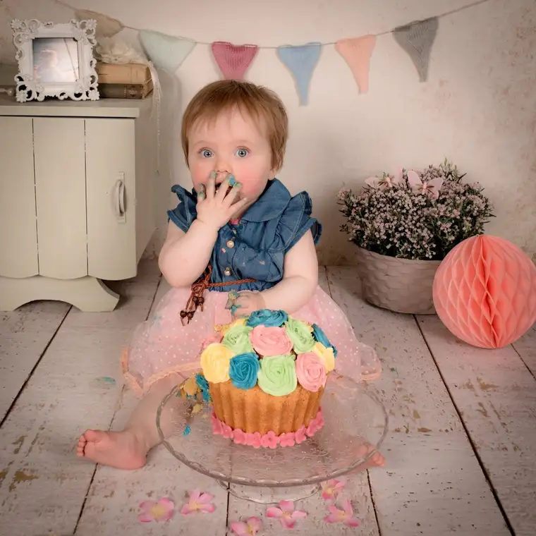
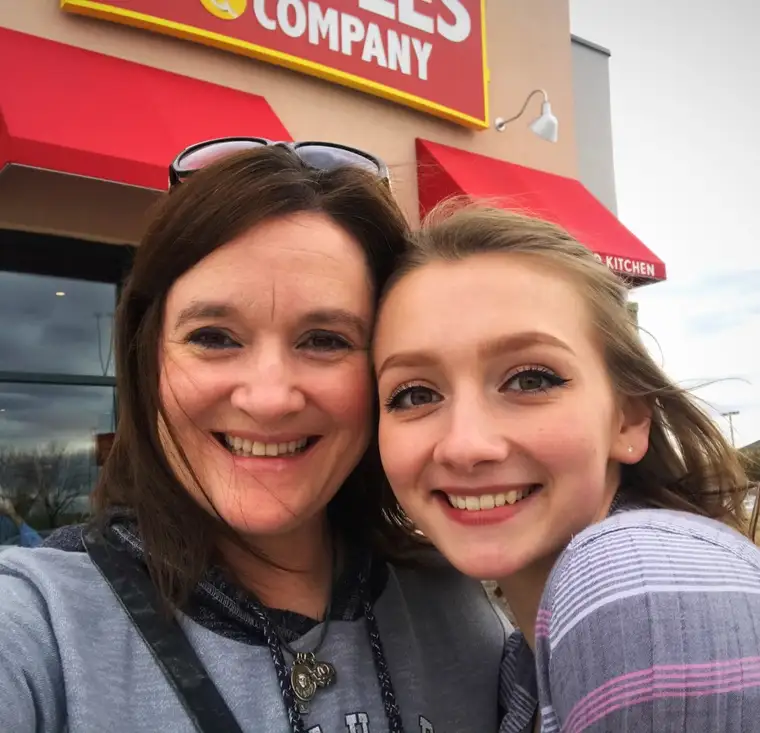
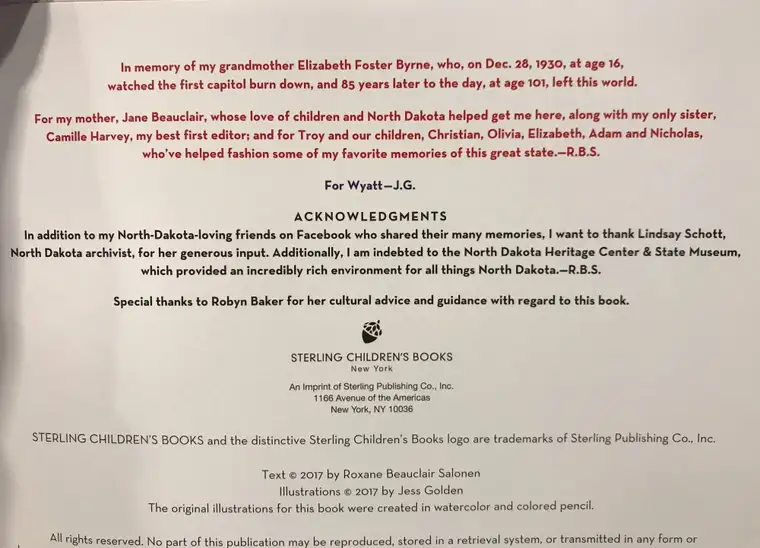

Today is the day! October 3, 2017. I’ll always remember this day. Yes, sadly, most will remember this as “the day after” a very tragic event in our country, #LasVegasMassacre. But there’s almost always a rainbow after a storm, and in my little world, that rainbow came in the form of hope from my latest children’s book’s launch date.

I’ve been anticipating this day for months, and in recent weeks, have been busy about the business of lining up events that will bring this charming book to the young readers for which it was intended.

But in the end, there was no big party, no huge launch with fancy balloons and cake.

Instead, my oldest daughter asked me if I’d meet her for lunch, and I said yes. I am grateful for the wonderful, warm soup. And the chance to spend time with a loved one on this special day. I am blessed!
Speaking of warm and yummy, there are a few yummy, warm treats mentioned in “The Twelve Days of Christmas in North Dakota,” too. I’ll be sharing more about them and other details in the coming weeks. For now, I want to share a bit about the scene in the birthing room as I worked on pushing this puppy out.
Unlike at a human birth, this birthing room mostly happened virtually. But I wasn’t alone.

I had a Lamaze helper — that would be my husband, who held my hand and reminded me when to breathe. My kids, of course, were there, too, sometimes by just being willing listeners as ideas went from mere thoughts to words on a paper. It was fun sharing details along the way.
One of the primary “delivery nurses” was there, too. You know that nurse you depend on through the birth, and whose expertise you value like nothing else? That honor goes to my sister, Camille, who was ready and willing to be my early reader, and even helped contributed a few ideas to the book, including the name of one of the characters.
My Mama, too, was nearby as always. She’s the one in the room who waited most expectantly, and who will take a million pictures of the “baby” and share with all she meets. (She’s already made a few sales by just carrying her early copy of the book around with her, and telling family and friends near and far that they need a copy!)
My Grandma was in the “room” too, in spirit, gazing on us all from the other side of the veil. But there’s no doubt she helped give life to this book, just as my first North Dakota children’s book (“P is for Peace Garden: A North Dakota Alphabet”, 2005). I can’t help but see serendipity in the fact that she passed from this life the very evening I finished my full draft of the work, on Dec. 28, the same date the North Dakota capitol burned down in 1930; an event she witnessed as a girl. Somehow, these confluences of dates and events tell part of the story, of her long love of North Dakota, my own life, and this book.
Lindsay Schott, archivist at the North Dakota Heritage Center (and family friend) was present too, along with Robin Baker, daughter of my mother’s long-ago teacher’s aide, now superintendent at Standing Rock, who offered cultural input. And I cannot fail to mention my awesome and gracious editor from Sterling Publishing, Christina Pulles, and talented illustrator, Jess Golden, whose work on the book is outstanding.
A book never comes into being all by itself, not any more than a baby. And so on this special day of its launch, I wanted to make sure those who have surrounded me are acknowledged, too.
I would love for you to find a copy of this nifty read, to give a copy to a favorite kid in your life, or even keep for yourself. If you enjoy it, please consider writing a review on Amazon or Barnes & Noble. These reviews are golden to an author, and help so much in getting the book further out into the world and into the hands of the kids who await it.
Thanks to all of you, too, who have supported and cheered me on, not just now, but for years. We all need a tribe in our room, and I am grateful for each of you, in whatever capacity you’ve given me a lift and a bit of life.
Q4U: What good thing did you launch this week?